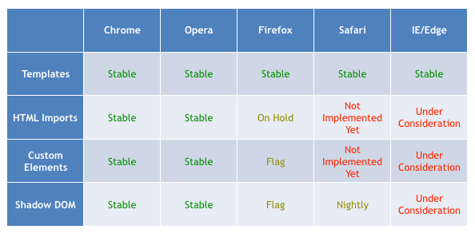
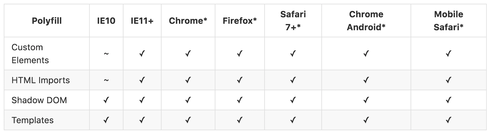
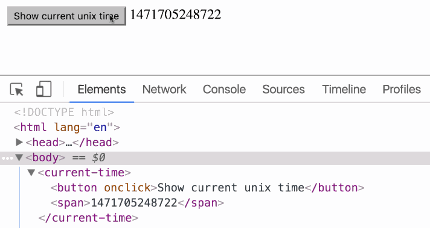

Live Long and Prosper with...
< web-components >

Triangle JS Meetup, stardate 211609.20
Starting the web component voyage...
Hello, we're members of Red Hat's Patternfly team.
Patternfly is an open source community of designers and developers.
We're interested in web components.
We think the DOM is the original platform and have started exploring web components in our framework patterns.


About Us...


Why components?
- Web standards and browsers are evolving, so should we.
- Reusing components from different frameworks is challenging, but it shouldn't be.
- The jQuery story is ending...we can build better plugins now.
- They make excellent leaf nodes, and can be dropped in other framework components like DOM.
Web components are...
- Composable: combine them together creating new experiences.
- Encapsulated: isolate markup, styles, and behavior.
- Reusable: can be extended, allowing you easily create new components from existing ones.
Myths
"Web components won't work with framework X..."
"I have to use Shadow DOM..."
"Web components require me to change my build..."
"Web components aren't compatible with JSX..."
"Web components can't be rendered server side..."
https://pimterry.github.io/server-components
Web Components, a timeline...
Ok...let's talk about browser support

Polyfills to the rescue!

- The shadow DOM polyfill can't prevent document styles from leaking into shadow roots. It does, however, encapsulate styles within shadow roots.
- Polyfilling shadow DOM is hard, so the shadow DOM polyfill is robust, invasive, and slow.
- The shady DOM shim in Polymer makes this more palatable now.
- Apple to release native Shadow DOM support in Safari 10 this Fall.
The basics...
Custom Elements
Browser APIs to define new HTML elements
HTML Templates
The <template> tag now allows documents to contain inert chunks of DOM
Shadow DOM
Encapsulated DOM and styling
HTML Imports
Declarative methods of importing HTML documents into other documents
Custom Elements
Define new elements with the customElements global.
/* my-element.js */
class MyElement extends HTMLElement {
// This gets called when the HTML parser sees your tag
constructor() {
super(); // always call super() first in the ctor.
this.msg = 'Hello, World!';
}
// Called when your element is inserted in the DOM or
// immediately after the constructor if it’s already in the DOM
connectedCallback() {
this.innerHTML = `${this.msg}
`;
}
}
// This registers your new tag and associates it with your class
window.customElements.define('my-element', MyElement);
Custom Elements
v0 Lifecycle
| Callback | Called when |
|---|---|
| createdCallback | an instance of the element is created |
| attachedCallback | an instance was inserted into the document |
| detachedCallback | an instance was removed from the document |
| attributeChangedCallback(attrName, oldVal, newVal) | an attribute was added, removed, or updated |
v1 Lifecycle
| Callback | Called when |
|---|---|
| constructor | an instance of the element is created or upgraded. |
| connectedCallback | called every time the element is inserted into the DOM. |
| disconnectedCallback | called every time the element is removed from the DOM. |
| attributeChangedCallback(attrName, oldVal, newVal) | an attribute was added, removed, or updated. note: only attributes listed in the observedAttributes property will receive this callback. |
| adoptedCallback | the custom element has been moved into a new document (e.g. someone called document.adoptNode(el)). |
Custom Elements
You can also extend native HTML elements. The primary benefit is to gain all of their features (things like DOM properties, methods, and accessibility features).
class FancyButton extends HTMLButtonElement {
constructor() {
super();
this.addEventListener('click', e => this.drawRipple(e.offsetX, e.offsetY));
}
// Material design ripple animation.
drawRipple(x, y) {
let div = document.createElement('div');
div.classList.add('ripple');
this.appendChild(div);
div.style.top = `${y - div.clientHeight/2}px`;
div.style.left = `${x - div.clientWidth/2}px`;
div.style.backgroundColor = 'currentColor';
div.classList.add('run');
div.addEventListener('transitionend', e => div.remove());
}
}
customElements.define('fancy-button', FancyButton, {extends: 'button'});
Custom Elements
Consumers can utilize the element by declaring it in their HTML:
<button is="fancy-button" disabled>Fancy button!</button>
or by creating an instance in Javascript:
let button = document.createElement('button', {is: 'fancy-button'});
button.textContent = 'Fancy button!';
button.disabled = true;
document.body.appendChild(button);
or using the new operator:
let button = new FancyButton();
button.textContent = 'Fancy button!';
button.disabled = true;
document.body.appendChild(button);
HTML Templates
The <template> element allows you to declare fragments of DOM which are parsed, inert at page load, and can be activated later at runtime.
<template id="element-template">
<style>
p { color: orange; }
</style>
<p>I'm in Shadow DOM. My markup was stamped from a <template>.</p>
</template >
Shadow DOM
A new way to encapsulate styles for your custom element, giving you functional boundaries between DOM subtrees.
(function(){
let elementTemplate = doc.querySelector('.element-template');
class MyElement extends HTMLElement {
attachedCallback() {
/* Create a new Shadow Root for your element */
this.createShadowRoot();
/* append your element's template */
this.shadowRoot.appendChild(document.importNode(elementTemplate.content, true));
}
}
})();
HTML Imports
Provide a new means to include HTML documents inside other documents. Now you can load your component's HTML, JS, and CSS in a single file.
Why do we need them?
- <iframe>s are difficult to style, frustrating to script with, and don't give us the same context.
- AJAX loading everything in large bundles & minified scripts just feels wrong. It doesn't give us composable pieces and makes dependency trees way too complicated.
- Approaching HTTP/2 standards and server push are a perfect fit for HTML Imports.
<head>
<link rel="import" href="/path/to/imports/my-element.html">
</head>
Fascinating!
So where can I find web components?
Here's a few places...
ReactReactive Elements |
AureliaAurelia |
PolymerPolymer Elements |
Onsen UIOnsen Elements
|
X-TagsX-Tags Elements |
BosonicBosonic Elements |
Frameworks are great but...
Frameworks often provide opinionated solutions for common problems. Most of the time frameworks will save you a great deal of effort.
Framework Commonalities
- Provide common methods for data binding
- Provide ways to observe changes to data or state, typically via the Observer pattern
- Give you patterns for handling and firing events
- Often provide a means to handle url routing
- Provide a common set of widgets and components
The Case for Custom Elements
One of the best parts about web components is their inherent ability to be extended and reused in a variety of situations. Web component flexibility and interoperability has been a key area of research for us...
Let's take a look under the hood and see if we can't mimic these frameworks in our own components with some good old fashioned javascript.
When to Roll Your Own
Writing your own components makes a good deal of sense if you find yourself doing the following:
- Writing a common set of customized widgets or components you'd like to implement across frameworks
- Providing a common set of behaviors or animations that are not provided in the framework
- Extending native elements
Events
Javascript's CustomEvent interface can be used to pass messages from your custom element to the outside world.
// fires when our element is attached to the DOM
attachedCallback() {
this.addEventListener('click', (e) => {
var eventObj = new CustomEvent('selected', {
detail: this.username
});
// fire custom event
this.dispatchEvent(eventObj);
});
}
Example:
Data Binding
To emulate two way binding in your component, simply use Object.defineProperty.
/* Creates a property for two-way binding */
bindProperty(obj, property, domElem, domProp) {
Object.defineProperty(obj, property, {
get: function() { return domElem[domProp]; },
set: function(newValue) { domElem[domProp] = newValue; },
configurable: true
});
}
Example:
Polymer data binding (under the hood)
The Observer Pattern
Defines a one-to-many dependency between objects so that when one object changes state, all dependents are notified and updated automatically.
function observable(value) {
var listeners = [];
function notify(newValue) {
listeners.forEach(function(listener){ listener(newValue); });
}
function accessor(newValue) {
if (arguments.length && newValue !== value) {
value = newValue;
notify(newValue);
}
return value;
}
accessor.subscribe = function(listener) { listeners.push(listener); };
return accessor;
}
The Observer Pattern (cont.)
var a = observable(3), b = observable(2);
var c = observable(a() + b());
a.subscribe(function(){ c(a() + b()); });
b.subscribe(function(){ c(a() + b()); });
console.log(c()); // 5
a(10);
console.log(c()); // 12
b(7);
console.log(c()); // 17
Example:
Angular2 Observers/EventEmitters in RxJS and React Observers in Flux (observers also used in Redux)
Mutation Observers
Easily observe changes in your custom element's DOM.
var observer = new MutationObserver(function(mutations) {
mutations.forEach(function(mutation) {
if (mutation.type === 'childList') {
/* handle child mutations */
}
if (mutation.type === 'attributes') {
/* handle attribute mutations */
}
if (mutation.type === 'characterData') {
/* handle data mutations */
}
});
});
/* instantiate observer on your custom element (this) or a nested element */
observer.observe(this, {
attributes: true,
childList: true,
characterData: true
});
Mutation Observers (cont.)
Mutation Observers replace the need for Mutation Events and deliver mutations in batches asynchronously.
Example:
Mutation observer polyfill for IE9+ (now included in webcomponents.js):
https://github.com/Polymer/MutationObserversFramework Uses
- Polymer.dom(node).observeNodes(callback) http://goo.gl/tTTYBo
- Used widely in Custom Elements / HTML Imports source
- Angular2 handles this using Zone.js & Native Api overrides instead
About Virtual DOM...
React uses Virtual DOM
React uses a very efficient "diffing" algorithm for mutating the DOM only when necessary. It creates a lightweight tree from Javascript objects that mimic a DOM tree.
There are libraries which can help if you want to imitate Virtual DOM in custom elements.
- diffhtml provides a lightweight (9.9kb) implementation which constructs "Virtual" Trees (similar to Virtual DOM) and interpolates markup with tagged template strings.
- SkateJS makes uses of Google's Incremental DOM.
About Virtual DOM...(cont.)
class CurrentTime extends HTMLElement {
constructor() {
super();
// Bind render to this instance so we
// can call it from within our template
this.render = this.render.bind(this);
this.render();
}
render() {
// Note the diff.html tagged template string
diff.innerHTML(this, diff.html`
<button onclick="${this.render}">
Show current unix time
</button>
${Date.now()}
`);
}
}
About Virtual DOM...(cont.)

https://medium.com/dev-channel/the-case-for-custom-elements-part-2-2efe42ce9133
Skate JS
A library built on top the W3C web component standards which aids in rendering and focuses on maintaining a small footprint.
- Only 4k min+gz
- Inherently cross-framework
Traditional Virtual DOM:
- Render an entirely new virtual DOM tree in memory.
- Diff the tree against the last known virtual DOM tree and apply changes to the physical DOM.
- While creating the new virtual DOM tree, walk along the existing tree and find changes as you go. Allocate no memory if there is no change. If there is, mutate the existing tree and apply the diff to the phyiscal DOM.
- Examples:
The Gold Standard
A good checklist to review before submitting your web component...
Ask yourself questions like...
- Are dependencies expressed (i.e. in Bower or NPM)?
- Is the DOM structure meaningful?
- Will the component respond to runtime changes in its content?
- Should the element support focus via Tab key or support other keyboard access?
- Is the styling presentable, extendable, responsive?
- Is the element API documented?
- Is the network and render performance efficient?
- Are strings, currencies, and dates localizable?
Oh yes! Demos...
Patternfly Pf-Tabs Component:
Beer JS app:
Getting Ready for Production
The P.R.P.L. Pattern
Requires the use of HTTP/2 Server and Server Push
- Push critical resources for the initial route
- Render initial route
- Pre-cache remaining routes (via service workers)
- Lazy-load and create remaining routes on demand
See the Polymer Shop App. Link to app demo.
Vulcanize
If you can't use an HTTP/2 enabled server, look to vulcanize your component assets.
- build tool for web components (can be used alongside gulp, grunt, or webpack)
- reduces an HTML file and it's dependent HTML Imports into one file
- follows HTML Imports and inlines them in a single page for production
Thanks!
The Patternfly team would like to thank...
- @RedHatUXD, Red Hat
- @trianglejs, Triangle JS
- @rob_dodson, Google
Questions?
Come visit us!
We'd be happy for you to join our Patternfly open source community.
Further Resources
Please go forth and prosper with...
< web-components >
And just remember...